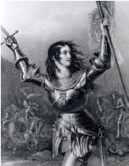

Jan Dark (1412-1431), İngilizler’le savaşan ortaçağ Fransız ordularının komutasını hayranlık uyandıracak bir şekilde henüz on yedi yaşında ele alan genç bir köylü kadınıydı. Bir dizi şaşırtıcı zaferden sonra yakalandı, sapkınlıkla suçlandı ve hemen kazığa bağlanarak yakıldı. Ancak Jan’ın cesur liderliğinden esinlenen Fransızlar sonunda İngilizler’i topraklarından çıkardılar. Böylelikle genç kadın, hafızalarda ulusal bir kahraman ve Fransa’nın sembolü olarak yer etti.

Avrupa kralları, özellikle de İngiliz ve Fransızlar arasındaki savaşlar, ortaçağ hayatının daimi bir özelliğiydi. Jan’ın 1429’daki üstün başarılarının gerçekleştiği sırada iki ülke, gerçekte 116 yıl süren, ara sıra tekrarlanan çatışmalardan oluşan Yüz Yıl Savaşları’nın tam ortasındaydı. Birçok açıdan savaş basitçe, Ortaçağ’da Avrupa’yı yöneten açgözlü feodal baronlar için bir iş teklifiydi. Asilzadeler toprak istemişlerdi ve savaş onu almanın bir yoluydu. Sonuç olarak, ortaçağ dönemi boyunca ulusal sınırlar da, herhangi bir hükümdar ile akrabalık bağı hissetmeyen Jan’ın ailesi gibi kıtanın ortak halkları da sürekli olarak yer değiştirdi.
Ama Jan’ın doğumuyla bu durum değişmeye başladı. İngilizler’e karşı Jan’ın hareketi, Avrupa milliyetçiliğinin ne olabileceğine dair ilk örneklerden biri oldu. Jan için Fransa, sadece harita üzerinde bir sınır veya asil bir ailenin mülkiyeti değildi. Orası özeldi, vatansever bir bağ hissettiği ülkesiydi. Bir ergen olarak tecrübe ettiği görülerinde, Jan, Tanrı’nın ondan İngilizler’i Fransa’dan çıkarmasını istediğini iddia etti. İngiliz ve Fransız soylularının arasındaki toprak kavgası, milletlerin savaşına dönüştü. Gelecek yüzyıllarda Avrupa’nın çeşitli feodal krallıkları, hem vatanseverliği hem de onun şeytanî ikizi ırkçılığı körükleyerek ayrı kültürel kimliklere sahip ulus-devletlere doğru evrildiler.
Jan’ın 1431’de yakalanmasından sonra, İngilizler onu uydurdukları sapkınlık suçuyla idam ettiler. Papa sonraları suçlamasını geri çekti ve Jan, 1920 yılında Katolik Kilisesi’nin bir azizesi ilan edildi.
EK BİLGİLER:
1. II. Dünya Savaşı sırasında, Fransız Direnişi’nin yeraltı savaşçıları, Jan’ın amblemi olan Lorraine haçını kendi sembolleri olarak benimsediler.
2. Jan’ın orduların yönetimini ele almasına izin verilmeden önce, Fransız kralı kayınvalidesinden Jan’ın bakire olduğundan emin olmasını istedi. Öyleydi.
3. On dokuzuncu yüzyılın Amerikalı yazarlarından Mark Twain, Jan’ın hikayesiyle adeta büyülenmişti ve “insan ırkının şimdiye dek çıkardığı, açıkça ve açık ara farkla en sıra dışı kişi” olarak gördüğü bu kadın hakkında bir kitap yazarak ve araştırarak on iki yılını geçirdi. Kitap, Twain’in en meşhur çalışmalarından olmamasına rağmen, Twain onu en iyi kitapları arasında saydı.